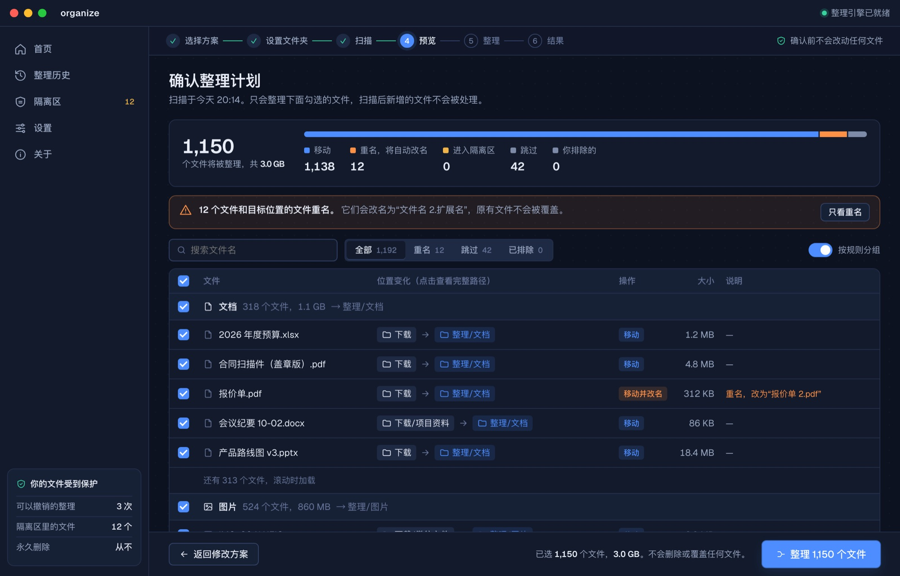
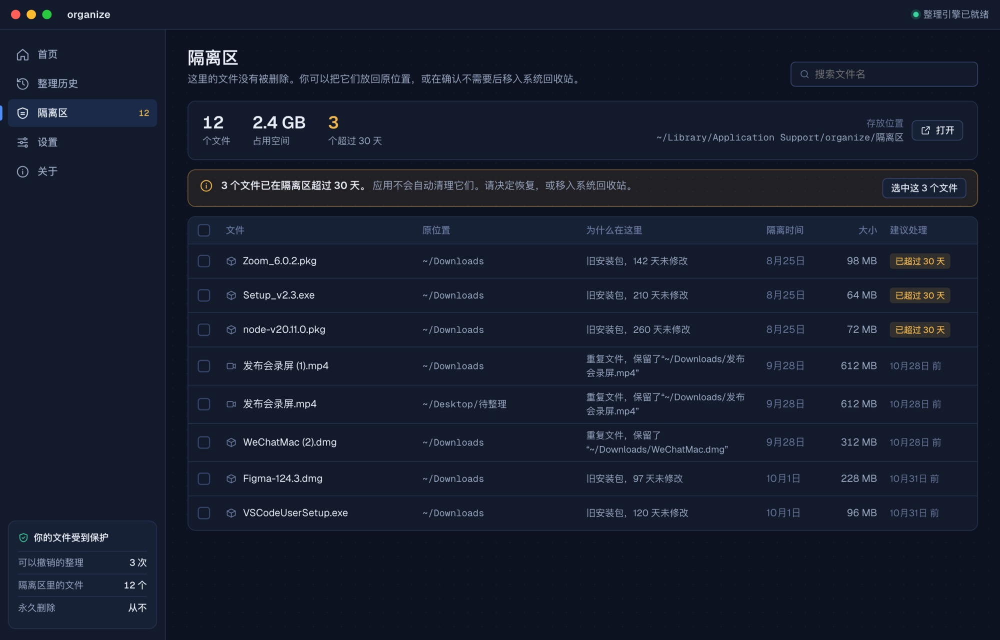

organize
开源 · Mac 桌面应用 · 命令行支持 Mac、Windows、LinuxOpen source · Mac app · command line for Mac, Windows, and Linux
先列出每个文件要去哪里。你确认之后，应用才移动它们。文件在这台电脑上处理。It lists where every file will go. Nothing moves until you confirm. Files are handled on this computer.
- 选方案Choose a plan
- 扫描Scan
- 预览Preview
- 整理Organize



命令行Command line
同一套整理也可以写成规则，在 Mac、Windows 和 Linux 上运行。下面这条规则把下载文件夹里的 PDF 移到文档中的发票目录。The same kind of cleanup can be written as rules and run on Mac, Windows, and Linux. This rule moves PDFs from Downloads into an invoices folder.
rules:
- name: Invoices
locations: ~/Downloads
filters:
- extension: pdf
actions:
- move: ~/Documents/Invoices/保存后运行 organize sim，先看将要发生的变化；确认之后再运行 organize run。安装包名是 organize-tool，代码以 MIT 许可公开。Run organize sim to see what would change, then organize run when it looks right. The package name is organize-tool. The code is MIT licensed.
源码SourceMIT